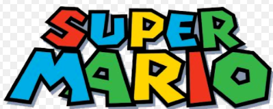

My Favorite Hobby
Playing Super Mario Bros
I love playing super mario bros
About
Super Mario Bros is a platform game developed and published by Nintendo. The successor to the 1983 arcade game Mario Bros. and the first in the Super Mario series, it was released in 1985 for the Famicom in Japan. Following a limited US release for the Nintendo Entertainment System in late 1985, the Vs. Super Mario Bros. arcade game port for the Nintendo Vs. System received a wide international release for overseas markets outside of Japan in early 1986, before the NES version received a wide release in North America the same year and in PAL regions in 1987. Players control Mario, or his brother Luigi in the multiplayer mode, as they travel the Mushroom Kingdom to rescue Princess Toadstool from Bowser . They must traverse side-scrolling stages while avoiding hazards such as enemies and pits with the aid of power-ups such as the Super Mushroom, Fire Flower and Starman.